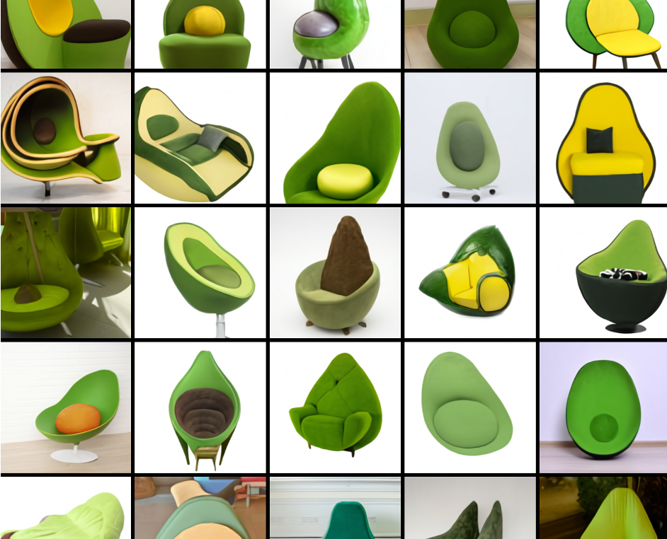
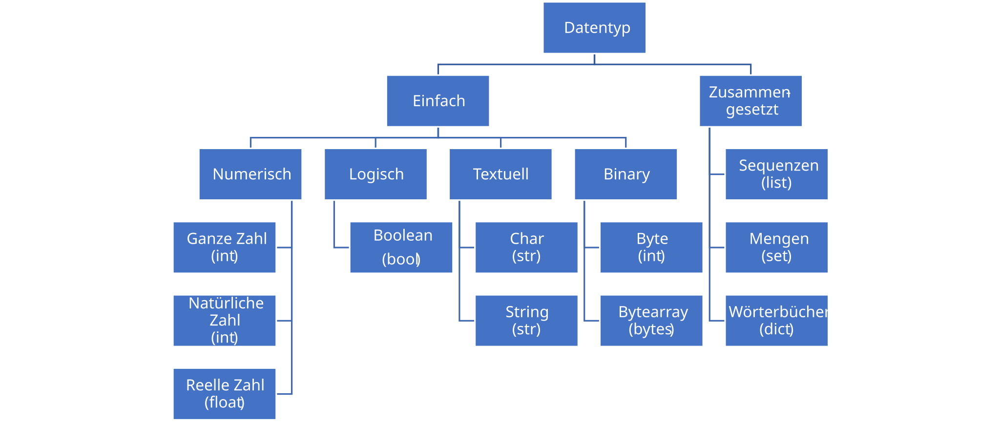
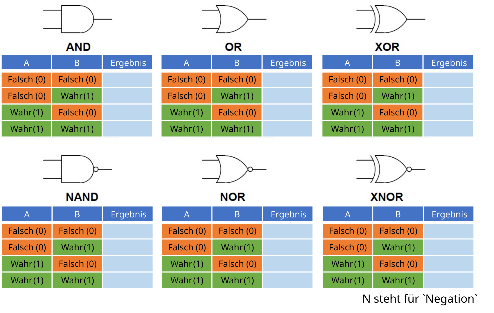
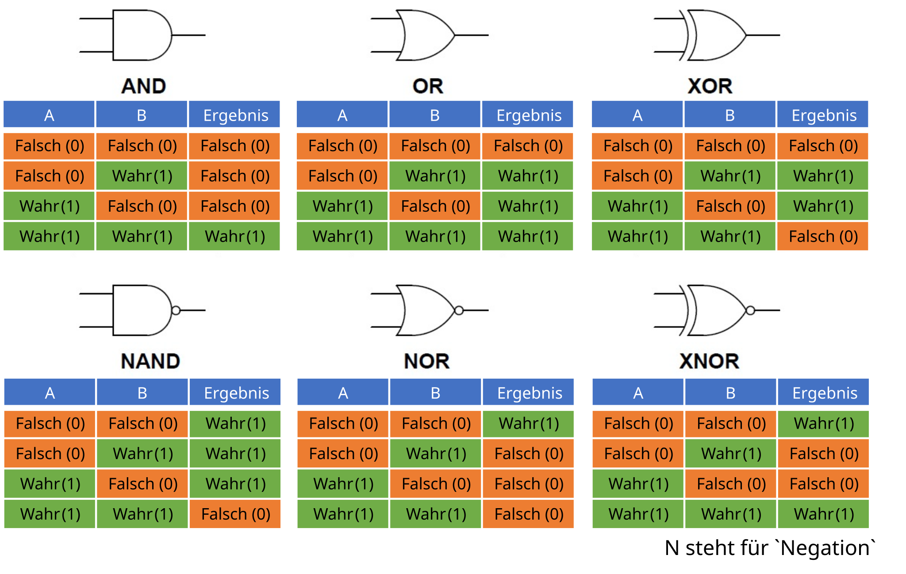

Operatoren
Joern Ploennigs · AI4SC
Midjourney: Caligraphic Equations
Hörsaalfrage
Welche Ebenen hat die Wissenspyramide?

Wiederholung: Wissenspyramide
Die Wissenspyramide ist ein Modell zur Darstellung der Entstehung von Wissen.
Die vier Elementtypen: Zeichen, Daten, Informationen und Wissen werden pyramidenförmig als 4 Ebenen dargestellt.
Zeichen formen die Basis und das Wissen die Spitze der Pyramide.

Hörsaalfrage
Welche Datentypen gibt es in Programmiersprachen?

Wiederholung: Datentyp
Der Datentyp gibt an, von welcher Art die Daten sind, die mit ihm beschrieben werden (Datenvereinbarung), und welche Operationen auf diesen ausgeführt werden können.
Hörsaalfrage
Welche Datentypen gibt es in Python?
Wiederholung: Datentyp - Python
Python vereinfacht einige Datentypen.

Anweisungen
Anweisung
Eine Anweisung (engl. statement) stellt eine in der Syntax einer Programmiersprache formulierte einzelne Vorschrift dar, die im Programm nacheinander auszuführen ist.
Ausdrücke
Eine besondere Form von Anweisungen sind Ausdrücke (engl. expression), die immer einen Wert zurückgeben und damit einen Datentyp haben.
Operator
Ein Operator ist ein Teil von Ausdrücken und ein Symbol oder Schlüsselwort, das dem Compiler oder Interpreter mitteilt, eine bestimmte Operation auf Werte auszuführen.
Variablenzuweisung: Ausdruck rechts, Name links
Arithmetische Operatoren
Arithmetische Operatoren arbeiten mit numerischen Datentypen.
| Operator | Beispiel | Ergebnis |
|---|---|---|
+ |
10 + 3 |
13 |
- |
10 - 3 |
7 |
* |
10 * 3 |
30 |
/ |
10 / 3 |
3.3333… |
// |
10 // 3 |
3 |
% |
10 % 3 |
1 |
** |
10 ** 3 |
1000 |
Zuweisungsoperatoren
Zuweisungsoperatoren weisen Variablen Werte zu. Python kennt kein x++, nur die abgekürzte Zuweisung.
| Operator | Wirkung |
|---|---|
x = y |
x erhält den Wert y |
x += 4 |
x = x + 4 |
x *= 4 |
x = x * 4 |
x /= 4 |
x = x / 4 |
x //= 4 |
x = x // 4 |
x %= 4 |
x = x % 4 |
Klammern verändern die Reihenfolge
Vergleichsoperatoren
= weist einen Wert zu. Für den Vergleich von Werten nutzt Python ==. Das Ergebnis ist immer True oder False.
| Operator | wahr, wenn |
|---|---|
x == y |
x gleich y |
x != y |
x ungleich y |
x > y |
x größer als y |
x < y |
x kleiner als y |
x >= y |
x größer gleich y |
x <= y |
x kleiner gleich y |
Identitätsoperatoren
x is y ist wahr, wenn beide Variablen auf dasselbe Objekt im Speicher zeigen. x is not y verneint das.
isprüft dieselbe Referenz.==prüft denselben Inhalt.
Hörsaalfrage
Welche Ergebnisse gibt es für welche logische Operation? (Entspricht der Aussagenlogik)

Hörsaalfrage
Welche Ergebnisse gibt es für welche logische Operation? (Entspricht der Aussagenlogik)

Logische Operatoren
Logische Operatoren kombinieren Wahrheitswerte. P und Q stehen für Ausdrücke wie x > 10 und x < 20.
| Operator | wahr, wenn |
|---|---|
P and Q |
P und Q beide wahr sind |
P or Q |
P oder Q wahr ist |
not P |
P falsch ist |
Operatorrangfolge: Wer bindet stärker?
Agentischer Arbeitsablauf: Logische Ausdrücke
Agentic Cycle
Wenn KI if not x is None and x > 0.0: generiert: vor dem Ausführen nachverfolgen.
- Vergleiche zuerst:
x is Noneundx > 0.0 - Dann
notauf das Ergebnis vonx is Noneanwenden - Zuletzt
andverknüpft beide Teile - Klarere Schreibweise prüfen:
x is not None and x > 0.0
Bitweise Operatoren
Bitweise Operatoren verknüpfen die Bits ganzer Zahlen. Das Gatter-Prinzip kennen Sie aus → 01c_Computerhardware.
| Operator | Wirkung |
|---|---|
x & y |
1, wenn beide Bits 1 sind |
x \| y |
1, wenn mindestens ein Bit 1 ist |
x ^ y |
1, wenn genau ein Bit 1 ist |
~x |
Einerkomplement |
x >> n |
Bits um n nach rechts |
x << n |
Bits um n nach links |
Überladen: Derselbe Operator, andere Bedeutung
Je nach Datentyp bedeutet derselbe Operator etwas anderes.
+verbindet Strings und Listen.-bildet die Differenzmenge bei Mengen.+ist für Mengen nicht definiert.
KI-generiert, erst nachverfolgen und dann ausführen
Welche Datentypen stehen links und rechts vom Operator?
Typfehler: Häufiger Fehler in KI-Code
Python verknüpft nur Werte desselben Datentyps. Strings und Zahlen müssen zuerst umgewandelt werden.
TypeError: can only concatenate str (not "int") to strMitgliedsoperatoren
Übungsaufgabe: KI-Code nachverfolgen
Lösung: KI-Code nachverfolgen
Für x = 10:
Für x = None: not x is None ergibt False. Wegen and wird x > 0.0 nicht mehr ausgewertet, das Ergebnis ist False.
Quiz zu Operatoren
Bestimmen Sie die Ergebnisse, bevor Sie ausführen:
10 // 3,10 % 3,-7 // 30 < a < 2mita = 1[1, 2, 3] + [2, 3, 4]
Ergebnisse:
3,1,-3True[1, 2, 3, 2, 3, 4]
Questions

Artificial
Intelligence